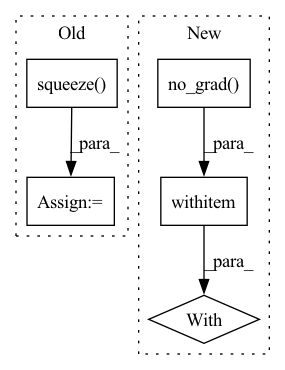

Pattern ID :7685
Before Change
image, gt_mask = test_dataset[n]
image_vis = image.astype("uint8")
gt_mask = gt_mask.squeeze()
if seg_model is not None:
x_tensor = torch.from_numpy(image).to(DEVICE).unsqueeze(0)
pr_mask = best_model.predict(x_tensor)After Change
if seg_model is not None:
seg_model.eval()
with torch.no_grad() :
x_tensor = torch.from_numpy(image).to(DEVICE).unsqueeze(0)
print(x_tensor.shape)
pr_mask = seg_model.predict(x_tensor)
pr_mask = pr_mask.argmax(dim=1).squeeze().cpu().numpy().astype("uint8")In pattern: SUPERPATTERN
Frequency: 4
Non-data size: 5
Instances Fragment ID: 25545366
Project Name: ais-bonn/vp-suite
Commit Name: 36b68bc67b166214b4c2975c8394f80bea8a212a
Time: 2021-07-15
Author: boltres@ais.uni-bonn.de
File Name: visualize.py
M Class Name: AnonimousClass
N Class Name: AnonimousClass
M Method Name: visualize(2)
N Method Name: visualize(2)
M Parent Class:
N Parent Class:
M File Name: visualize.py
N File Name: visualize.py
M Start Line: 16
M End Line: 41
N Start Line: 16
N End Line: 33
Before Change
pred_mask_vis = colorize_semseg(pred_mask, num_classes=SYNPICK_CLASSES) // [T, 3, h, w]
frames_colorized = colorize_semseg(postprocess_mask(frames_seg.squeeze()), num_classes=SYNPICK_CLASSES).unsqueeze(dim=0) // [1, T, 3, h, w]
frames_colorized_vis = postprocess_img(frames_colorized.squeeze(dim=0) ) // [T, 3, h, w]
input_colorized = frames_colorized[:VIDEO_IN_LENGTH]
colorized_then_pred = pred_colorized_mask_model.pred_n(input_colorized, pred_length=VIDEO_PRED_LENGTH)After Change
test_loader = DataLoader(test_data, batch_size=1, shuffle=True, num_workers=4)
iter_loader = iter(test_loader)
with torch.no_grad() :
for i in tqdm(range(10)):
frames = next(iter_loader).to(DEVICE) // [1, T, 3, h, w]
frames_vis = postprocess_img(frames.squeeze(dim=0)) // [T, 3, h, w] Fragment ID: 25545360
Project Name: ais-bonn/vp-suite
Commit Name: 13016d4ab8ba4f8e7ee087155a6c5171f4d00ba3
Time: 2021-08-02
Author: boltres@ais.uni-bonn.de
File Name: scripts/visualize_4_way.py
M Class Name: AnonimousClass
N Class Name: AnonimousClass
M Method Name: visualize_4_way(1)
N Method Name: visualize_4_way(1)
M Parent Class:
N Parent Class:
M File Name: scripts/visualize_4_way.py
N File Name: scripts/visualize_4_way.py
M Start Line: 16
M End Line: 73
N Start Line: 17
N End Line: 74
Before Change
else:
self.process()
output_img = self.post_process()
output_img = output_img.data.squeeze() .float().cpu().clamp_(0, 1).numpy()
output_img = np.transpose(output_img[[2, 1, 0], :, :], (1, 2, 0))
if img_mode == "L":
output_img = cv2.cvtColor(output_img, cv2.COLOR_BGR2GRAY)After Change
img = cv2.cvtColor(img, cv2.COLOR_BGR2RGB)
// ------------------- process image (without the alpha channel) ------------------- //
with torch.no_grad() :
self.pre_process(img)
if self.tile_size > 0:
self.tile_process()
else: Fragment ID: 25545356
Project Name: sczhou/codeformer
Commit Name: 581abcb93b238be31d0cfea8978c3d204114bc1b
Time: 2022-09-04
Author: shangchenzhou@gmail.com
File Name: basicsr/utils/realesrgan_utils.py
M Class Name: RealESRGANer
N Class Name: RealESRGANer
M Method Name: enhance(4)
N Method Name: enhance(4)
M Parent Class:
N Parent Class:
M File Name: basicsr/utils/realesrgan_utils.py
N File Name: basicsr/utils/realesrgan_utils.py
M Start Line: 199
M End Line: 211
N Start Line: 199
N End Line: 211
Before Change
A batch of audio signals to transform to features.
out = self.model.feature_extractor(wav)
out = self.model.feature_aggregator(out).squeeze( 0)
out = out.transpose(2, 1)
return out
After Change
// If we freeze, we simply remove all grads and features from the graph.
if self.freeze:
with torch.no_grad() :
return self.extract_features(wav).detach()
return self.extract_features(wav)
Fragment ID: 25545369
Project Name: speechbrain/speechbrain
Commit Name: e532179dbe4f945aa99cb7f2270ec55d6004f3fa
Time: 2021-04-07
Author: parcollet.titouan@gmail.com
File Name: speechbrain/lobes/models/fairseq_wav2vec.py
M Class Name: FairseqWav2Vec1
N Class Name: FairseqWav2Vec1
M Method Name: forward(2)
N Method Name: forward(2)
M Parent Class: nn.Module
N Parent Class: nn.Module
M File Name: speechbrain/lobes/models/fairseq_wav2vec.py
N File Name: speechbrain/lobes/models/fairseq_wav2vec.py
M Start Line: 167
M End Line: 171
N Start Line: 174
N End Line: 178